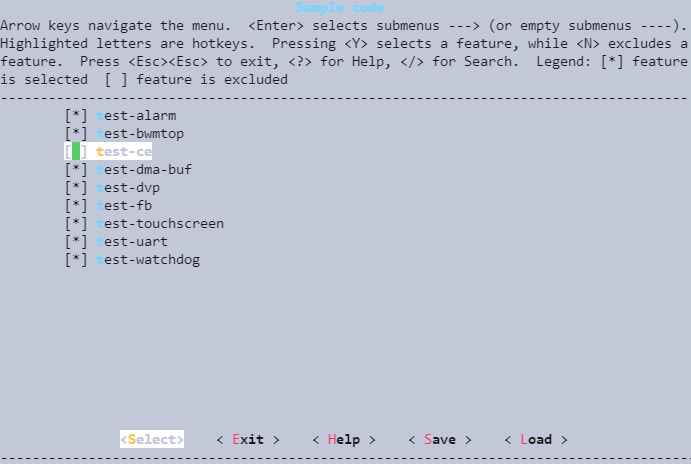
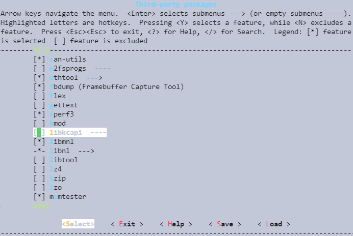
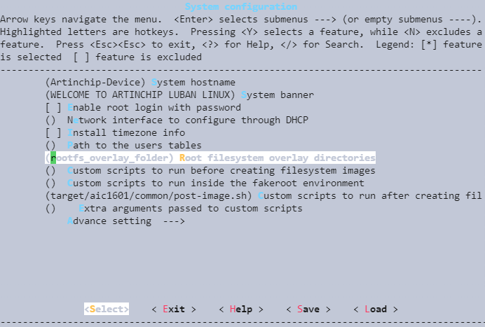
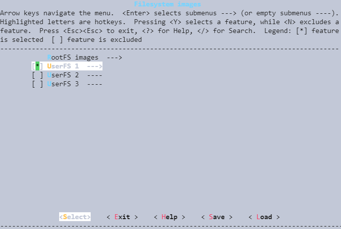
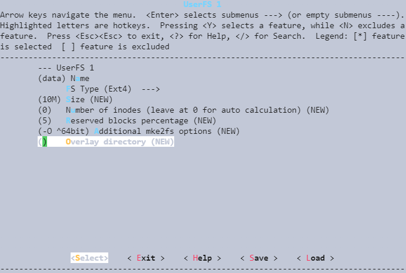

配置分区和镜像
15 Jan 2024
Read time: 1 minute(s)
在构建系统镜像时，首先需要配置分区和镜像，包括定义不同的文件系统类型、大小以及挂载点。例如，使用 menuconfig 工具来选择和配置所需的软件包。
定制软件包
-
在 SDK 根目录下执行下列命令，进入 menuconfig 的功能配置界面：
make menuconfig -
导航到软件包选项，根据项目需求勾选所需的软件包，编译到该项目的镜像中。
烧录到目标板的系统镜像，包含一些必要和可能需要的软件。在编译之前，根据不同的项目需求，勾选必须的软件包。软件包类型如下：-
ArtInChip 开发的软件包

-
Third Party 开源的软件包

-
-
保存配置并退出 menuconfig。
-
使用下列命令生成固件镜像。
make
配置 RootFS 镜像
RootFS 是系统启动时挂载的第一个文件系统，包含了操作系统的基本环境和用户空间程序。如需在 RootFS 中添加额外的程序和数据，可以通过 RootFS Overlay 功能进行配置。
不同项目，所需要使用的文件系统不同，在创建该项目是基本上已经决定，不需要修改。例如将外部编译的测试程序打包到 RootFS 中，可以使用 RootFS Overlay 的配置。在 System Configuration/Root filesystem overlay directories 中可配置需要合并的目录。
以下图为例，rootfs_overlay_folder 为 Luban/rootfs_overlay_folder，生成 RootFS 镜像时，该目录的内容会被合并到 RootFS 中。

配置 UserFS 镜像
除了 RootFS 之外，系统镜像还可能包含其他分区的文件系统镜像。为了方便制作其他分区的文件系统镜像，增加了配置支持最多生成三个文件系统镜像文件。
注：
关于 UserFS 的详细说明，可查看。

配置内容包括名字、文件系统类型、参数信息以及需要合并的文件目录，示例如下：

注：
文件系统镜像中的内容，也可以在编译的时候生成并安装到指定文件系统中。